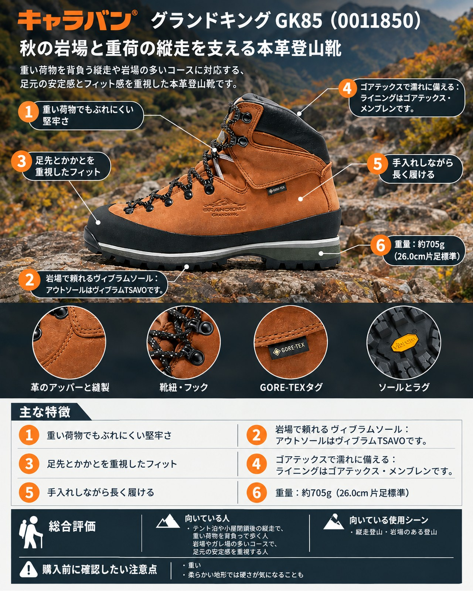

10月に入り、3,000m級の山では初冠雪の便りも聞かれる季節になりました。山小屋の営業終了が増え、テント泊や防寒具の追加で荷物が重くなりがちなのもこの時期です。足元にも、重い荷物を背負って岩場やガレ場を歩ける支えが欲しくなります。
導入
10月に入り、3,000m級の山では初冠雪の便りも聞かれる季節になりました。山小屋の営業終了が増え、テント泊や防寒具の追加で荷物が重くなりがちなのもこの時期です。足元にも、重い荷物を背負って岩場やガレ場を歩ける支えが欲しくなります。
今回紹介するのは、キャラバンの「グランドキング GK85」（品番 0011850）です。公式ではGKシリーズのトレッキングラインに位置づけられ、厚さ2.0mmのヌバックレザーとハードフレームで、重荷を背負う夏山縦走に向く堅牢さをうたっています。軽さより「支え」と「長く履けること」を重視したい人に向く一足です。
基本スペック
| 項目 | 内容 |
|---|---|
| 商品名 | グランドキング GK85 |
| 品番 | 0011850 |
| 価格 | 35,200円（税込、公式オンラインストア） |
| 重量 | 約705g（26.0cm片足標準） |
| アッパー | 2.0mmヌバックレザー（ランドラバー補強） |
| ライニング | ゴアテックス・メンブレン |
| アウトソール | ヴィブラムTSAVO |
| ミッドソール | EVA |
| フレックス | ハードフレーム（EVAラミネート） |
| ワイズ | 3E（アドバンス ラスト／ウェッジトゥ） |
| サイズ | 22.5〜29.0cm（0.5cm刻み）、30.0cm |
| カラー | 440ブラウン |
重い荷物でもぶれにくい堅牢さ
2.0mmのヌバックレザーとハードフレームの組み合わせで、靴全体の剛性が高いのがGK85の持ち味です。使った人の声では、岩場やガレ場での安定感を評価しており、「岩場で足裏と膝が楽になった」という声もあります。秋の縦走で荷物が増えても、足元がぶれにくいことは心強い点です。
岩場で頼れるヴィブラムソール
アウトソールはヴィブラムTSAVOです。使った人の声でもグリップを評価する声が複数あり、キャラバン公式サイトのスタッフによる使用記事でも、岩場や木道で扱いやすいと紹介されています。
足先とかかとを重視したフィット
ラストは、足先のフィット感とかかとのホールド感を重視した「アドバンスラスト」で、ワイズは3Eです。くるぶし部分をシェイプして岩場での安定感を高めているほか、つま先の空間を広げるウェッジトゥ設計と、フィットを微調整できるハーフインソールが付属します。
ゴアテックスで濡れに備える
ライニングはゴアテックス・メンブレンです。天気が変わりやすく、冷たい雨に当たることもある秋の山で、靴の中の濡れを防ぎたい人には安心材料になります。
手入れしながら長く履ける
履き口まで本革を使ったオールレザーで、公式はメンテナンスしながら足に馴染ませる楽しみを挙げています。1足を長く履き込みたい人に向いています。
デメリット・注意点
- 重い：約705g（26.0cm片足）は軽量な登山靴ではありません。同じシリーズの他モデル（GK26が約495g、GK8Xが約660g）と比べても重めです。
- 柔らかい地形では硬さが気になることも：使った人の声の1件では、木の根を踏みしめる場面で靴が硬く、踏み込みにくかったとの指摘があります（単独の意見）。
- 夏は蒸れやすい：公式サイトのスタッフ記事では、オールレザーのため化繊素材より透湿性が劣り、真夏は蒸れを感じることがあるとしています。
- 手入れが必要：レザーは汚れを放置すると変色するとの使った人の声があり、使用後の手入れが欠かせません。
- 雪山用ではない：公式の想定は重荷の夏山縦走です。初冠雪後の高所や急峻な岩壁を目指すなら、アルパイン向けの専用モデルを検討しましょう。
向いている人・向いていない人
◎向いている人
- テント泊や小屋閉鎖後の縦走で、重い荷物を背負って歩く人
- 岩場やガレ場の多いコースで、足元の安定感を重視する人
- 本革の靴を手入れしながら長く履きたい人
△向いていない人
- 軽さを最優先したい人、低山の日帰り中心の人
- 積雪期の高所や本格的な岩壁登攀に使いたい人
- 靴の手入れに手間をかけたくない人
まとめ
GK85は、2.0mmのヌバックレザーとハードフレームで重荷を支える、キャラバンの本格的な本革登山靴です。重さと手入れの手間はありますが、岩場での安定感やグリップを評価する声が多く、荷物が増える秋の縦走で頼れる一足です。
この記事で紹介した商品
価格・重量・在庫は各ブランド公式サイトの記載（確認日つき）にもとづきます。商品を押すと、購入先を選べます。
この記事にはアフィリエイト広告が含まれます。リンク先での購入により、当サイトが報酬を受け取る場合があります。山行の前には、最新の気象とルートの状況を必ずご確認ください。